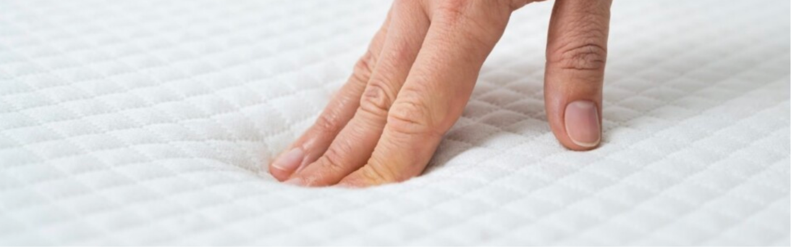

Enviaments i muntatge gratuït


Cuándo y por qué cambiar de
colchón para mejorar tu descanso
Hoy en MacMobles te contamos cuándo y por qué cambiar definitivamente tu colchón
para
que te garantices siempre el mejor descanso

Dormir bien no es un lujo sino una absoluta prioridad. Por esa razón, si consideras que tu colchón ya cumplió su función y es necesario cambiarlo, no tardes más y hazlo rápidamente porque no solo afectas a tu descanso, sino también podrías estar perjudicando tu salud integral sin saberlo.
Hoy en MacMobles, tu tienda de muebles para el hogar en Cataluña, te compartimos una guía completa con todos los puntos que debes tener en cuenta para que identifiques al 100% cuando ha llegado el momento necesario de renovar definitivamente tu colchón.
¡Toma nota de todo lo que te contamos a continuación!
Primer paso: ¿Cuál es el estado de tu colchón?
Una vez que ya estás convencido de que el problema cuando duermes no eres tú, sino tu colchón, entonces ha llegado el momento de tomar una decisión importante que beneficiará por completo la calidad de tu sueño.
En ese sentido, los expertos en descanso afirman que los colchones, sin excepción alguna, tienen de por sí una fecha de caducidad. En consecuencia, la vida útil de un colchón convencional, dependiendo del uso que le des, suele rondar entre los 5 y 10 años. La idea es que siempre identifiques cuál es el estado de tu colchón para actuar a tiempo y evitar que perjudiques la calidad de tu sueño y sobre todo a tu salud.
Examina tu colchón
Para comprobar que es hora de cambiar de colchón no hace falta ser un experto en el descanso. Por ende, cuando tu colchón muestre señales evidentes de deterioro, por ejemplo en el exterior, tanto en el material como en la textura de la funda, entonces ha llegado la hora de cambiarlo. Así también cuando nos referimos al interior del colchón:lo podrás verificar en cómo lo sientas en el tacto estando recostado en él.
¿Cuántos años tiene tu colchón?
En MacMobles podemos afirmar que la vida media de un colchón ronda entre los 5 a los 10 años, desde luego según el uso que le hayas dado a lo largo de su vida.
Sin embargo, cada persona y cada colchón son diferentes, especialmente si tenemos en cuenta su composición, los materiales de fabricación y cómo lo hayas cuidado.
Ten en cuenta que estos matices son fundamentales para valorar el cambio de tu colchón. Por ello, te recomendamos que no alargues más de la cuenta la vida de tu viejo colchón e inviertas en la renovación, priorizando la calidad al precio para que te garantices el mejor descanso.
¿Qué uso le diste a tu colchón?
Como citamos anteriormente, depende mucho del uso que le des a tu colchón para valorar su cambio. De esta manera, tu colchón será el primero en demostrarte el desgaste que sufra y dependerá de ti hacer caso a las señales evidentes.
No olvides que la vida de un colchón no solo depende de la calidad con la que ha sido fabricada, sino también de las personas que lo usen, teniendo en cuenta el peso que tengan y cómo lo usen durante los años.
¿Cómo te despiertas cada mañana?
El mejor indicador de que tu colchón cumple su función esencial es comprobar cómo te despiertas cada mañana.
Por consiguiente, si te levantas y te sientes completamente cansado, entonces es porque tienes realmente un problema con tu colchón que está afectando a tu descanso. Los expertos en descanso afirman que descansar bien repercute directamente en tu salud física y mental.
Por ende, si este es tu caso, y sobre todo no existen otras causas que puedan estar conectadas a tu malestar matutino, considera que ha llegado el momento necesario de renovar tu colchón para que mejores la calidad de tu vida.
En MacMobles sabemos que el colchón es el eje principal del descanso y por eso te ofrecemos una gran variedad de colchones, que se adaptan a tus necesidades personales a la hora de dormir, para que así encuentres el colchón ideal que te ayudará a despertar siempre con la mejor energía y sobre todo con mente positiva.
¿Tu colchón está hundido?
El peso de las personas determina las prestaciones del colchón. Por ello, este factor, tarde o temprano, terminará afectando su forma y la comodidad que te ofrece por completo.
Y esto va más allá de darle la vuelta al colchón cada seis meses o después un año. No obstante, el secreto es que te des cuenta a tiempo de que tu colchón ya no te ofrece las mismas prestaciones como lo hacía antes.
Dormir en un colchón con desperfectos como el hundimiento o la deformación afecta completamente a tu salud, ya que estarás adoptando malas posturas al dormir, que al final tendrán consecuencias negativas a nivel físico e incluso psicológico.
¿Ya sabes si ha llegado la hora de cambiar tu colchón?
Si la respuesta es afirmativa, te esperamos en MacMobles, en todas nuestras tiendas en Cataluña, para que descubras nuestra gran variedad de colchones de todas las categorías y la más alta calidad, que te ayudarán a disfrutar siempre del mejor descanso placentero que te mereces.
Y si también quieres estar al día de todas nuestras últimas novedades y promociones durante marzo, te animamos a seguirnos en Instagram y Facebook, donde siempre encontrarás todo lo que estás buscando para tu hogar.
¡Que disfrutes de tu nuevo colchón!